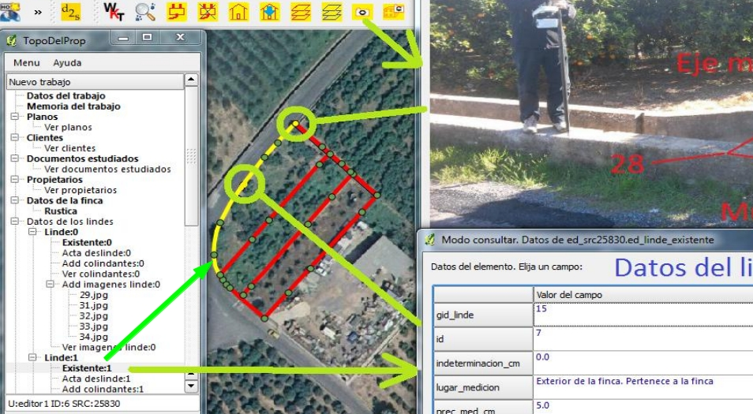
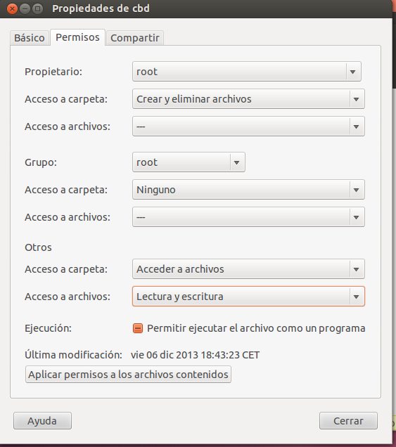
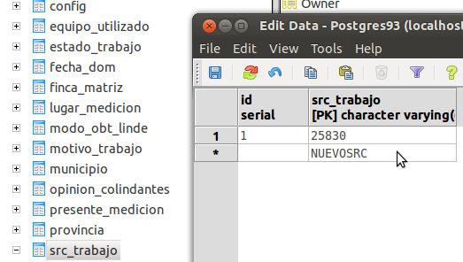

TopoDelProp
TopoDelProp.Tool for managing geographic data and metadata to support a legal cadastre. Valid for every country.
Empty database creation instructions in Windos and Linux systems
J. Gaspar Mora Navarro Dep. de Ing. Cartográfica, Geodesia y Fotogrametría Escuela de Ing. Geodésica, Cartográfica y Topográfica Universidad Politécnica de Valencia topodelprop@gmail.com
You can to try a system justification and the program manual in the thesis document
http://riunet.upv.es/handle/10251/321/browse?authority=27239&type=author
In the thesis docuement you'll finde a detailed description from the instalation in Windows from TopoDelProp plugin and from the usuary manage program TopoDelPropUsuarios.py

Probably you want to test the program quickly and see if you are intresting in his studio or not. For that I recomend you that you install the plugin and configure it. That can bring you abbout 5 minutes. Later test it. You can access, as a 'editor1' or 'consultor_autorizado1', to the test database instaled in 158.42.199.31 IP. Passwords are the same then user names. Test the plugin and, if you are interesed in to have your own database, then follow with the next instructions.
The data connection are:
host: 158.42.199.31
port: 5432
database: propiedad
user: consultor_autorizado1
password: consultor_autorizado1
The Internet access to server is slow. If you wish, you can to install a database with 80 topographic academic works in your computer. For it you have to have instaled PostgreSQL 9.1, 9.2 o 9.3 + PostGIS 2 o 2.1. Download de database file copy and restore it in your computer. It's easy.
The instructions and database file are in one entry in the blog http://planosypropiedad.com.
I say you that the program isn't easy tool because it try to solve a complex problem: mange the topographic data and metadata in the same database. Automatic process in the database informs you if the geometry of the data are correct or not. Also you can send and retrieve documents like: plans, dwg, imagens, … The manual have abbout 100 pages, in spanish.
Plugin instalation
You need to do two steps:
Install QGIS 2. In Windows I recommend you to install the program in C:/. For example in C:/Qgis20 directory.
Install the plugin. You need to do two steps:
Copy the plugin directories in C:/Qgs20/apps/qgis/python/plugins, in Windows case. For Linux, copy the directories in /home/usuario/.qgis2/python/plugins (for to see the .qgis2 directory probably you need to press CTRL+H). The fist directory is a library, that can be copyed in everywhere in path from Qgis Python. The second directory is the plugin.
For the QGIS plugin works, there are to make a archive called dirTrabajos.txt. His position is obliged. In Windos have to be in c:/ directly. In Linux in \home\user. The file content is two lines:
The first line says the directory where the plugin will load and will upload the files: topographic memory, images, etc. This prevents too many downloads from the database. You have to make that directory and make you sure you have write permission.
The second line says the path and name of the program with it will show the PDF files,
In Windows, the content of the file can be (see in the two - - of the end, they are necessary):
c:/delProp--
C:/Program Files (x86)/Adobe/Reader 9.0/Reader/AcroRd32.exe--
In Linux, the file content can be:
/home/usuario/delProp--
evince--
Other plugin documents
Inside TopoDelProp instalation directory, you will find an other directory named documentos,
Si examina el directorio de instalación del plugin TopoDelProp, encontrará una carpeta, inside that directory there are some other directories of interest:
BaseDatosEjemplo: Has instructions for restore a database for can text the system. You can download the text file database from a article of http://planosypropiedad.com blog.
cbd: contiene ficheros con código SQL que hay que ejecutar para restaurar la base de datos de ejemplo, o en el caso de que se desee crear una base de datos vacía y comenzar desde cero.
GestionUsuarios: contiene una aplicación Python para facilitar la gestión de usuarios de la base de datos
CREATING A DATABASE EMPTY IN ANY REFERENCE SYSTEM TO WORK WITH TOPODELPROP
These instructions are more current then the thesis document instructions.
The difference for the creation of the database between Windows an Linux system, it's only in the path from code SQL files that necessary to execute. Unafortunately, the paths to files have to be absolutely. For modify the less as possible the paths I propose:
In Linux copy the cbd directory, who has all files to execute, in /home. That shape the paths will be the same, an you don't need modify anything.
In Windows, I recommend to make the c:/delProp directory and to copy there the cbd folder, but you will have to change the paths, file to file, changing /home/ for c:/delProp/
Make the 'propiedad' database (you can use every other name).
Windows: createdb -U usuario -E UTF8 propiedad
Linux: createdb -E UTF8 propiedad
The difference betwin Windows and Linux, using PostgreSQL, is that in Linux you need to use the same user from Linux an PostgreSQL. Is for that you don't need to specific user and password every time in Linux for use psql program.
Inside database, make the PostGIS extension. You need postgis 2, or 2.1
In a console window:
Windows: psql -U usuario -d propiedad -W
Linux: psql propiedad
create extension postgis;
Create the users for start: admin_propiedad1, editor1, consultor1, consultor_autorizado1. The passwords for this users is his own name.
A partir de ahora hay que ejecutar archivos .txt que contienen código SQL en la base de datos
Los archivos se ejecutan desde dentro de la base de datos propiedad con
\i \ruta_absoluta\nombrearchivo.extension
Es por esto que es conveniente copiar la carpeta cbd en \home, de esta forma
las rutas no hay que cambiarlas dentro de los archivos. Para hacerlo tendrá que actuar como
administrador. Luego, también como administrador, tendrá que conceder permisos sobre el directorio a todos los usuarios para que psql tenga acceso a ellos.

Puede eliminar estos usuarios y crear nuevos, manualmente o con la aplicación
UPVDelPropUsuarios.py. Encontrará la forma de instalación y manual en el documento
de tesis
Los usuarios de partida se crean ejecutando
\i /home/cbd/001_creaUsuarios.txt
Crear las tablas comunes para todos los esquemas espaciales
Antes de ejecutar este script localice los ficheros de texto provincias.txt y municipios.txt, en el directorio /home/cbd/v2/def, y sustituya las provincias y municipios españoles por los de su país.
Guarde el fichero con codificación UTF8.
Ejecute el fichero:
\i /home/cbd/comun/001_creaComun.txt
Conceder permisos a los usuarios sobre las tablas comunes
\i /home/cbd/comun/004_permisosComun.txt
Crear tablas espaciales
En este caso, se proporcionan archivos de texto que generan las tablas espaciales
para el src 25830 (código EPSG para el sistema ETRS89, UTM, huso 30)
Para cambiar el sistema, solo debe acceder a los archivos y sustituir el texto 25830 del archivo por su código EPSG.
El archivo proporcionado, que llama a otros archivos es
/home/cbd/src25830/001_crea25830.txt
Este archivo ejecuta otros tres
/home/cbd/v2/def/3src25830.txt
/home/cbd/v2/edicion/3edSrc25830.txt
/home/cbd/script/fdisparadoras/crea_disparadores_25830.txt
Debe acceder a los cuatro archivos y sustituir el texto 25830 del archivo por su código EPSG
Luego solo debe ejecutar el primero, que a su vez, ejecuta el resto.
\i /home/cbd/src25830/001_crea25830.txt
Ahora se necesita conceder permiso a los usuarios sobre los nuevos objetos de la base de datos, para ello acceda al archivo
/home/cbd/src25830/004_permisos25830.txt
y sustituya el texto 25830 por su nuevo código EPSG y ejecútelo en la base de datos
\i /home/cbd/src25830/004_permisos25830.txt
Este es el proceso para crear un SRC nuevo. Si necesita más SRCs para cubrir más territorio solo debe duplicar los cinco archivos y sustituir el viejo texto SRC por e nuevo, ejecutando después solo dos de ellos: 001_creaXXXXX.txt y 004_permisosXXXXX.txt
Le aconsejo la siguiente estrategia:
Realice una copia de la carpeta original /home/cbd/src25830
Renómbrela a /home/cbd/srcXXXXX
Renombre sus archivos 001_crea25830.txt y 004_permisos25830.txt a 001_creaXXXXX.txt y 004_permisosXXXXX.txt
Acceda a los archivos renombrados y sustituya 25830 por su nuevo código XXXXX
Realice ahora una copia de los archivos originales, en las mismas carpetas donde se encuentran
/home/cbd/v2/def/3src25830.txt
/home/cbd/v2/edicion/3edSrc25830.txt
/home/cbd/script/fdisparadoras/crea_disparadores_25830.txt
Renombre estos archivos a
/home/cbd/v2/def/3srcXXXXX.txt
/home/cbd/v2/edicion/3edSrcXXXXX.txt
/home/cbd/script/fdisparadoras/crea_disparadores_XXXXX.txt
Ejecute los archivos
\i /home/cbd/src25830/001_creaXXXXX.txt
\i /home/cbd/src25830/004_permisosXXXXX.txt
Puede repetir el proceso con todos los SRC que necesite. Se crean las tablas espaciales, se conceden los permisos a los usuarios, y se añaden los procedimientos automáticos de la base de datos.
Configuración del plugin TopoDelProp
Para poder utilizar los nuevos SRC creados desde el plugin TopoDelProp, queda un último detalle. Hay que añadir los textos de los nuevos SRC a la lista de SRC del programa. Para ello únicamente hay que añadirlos a la tabla de la base de datos dom.src_trabajo (esquema dom, tabla src_trabajo). Añada solo el número del src en la columna src_trabajo. Si tiene cinco SRCs creados, deberá tener cinco filas en esta tabla.

Joaquín Gaspar Mora Navarro